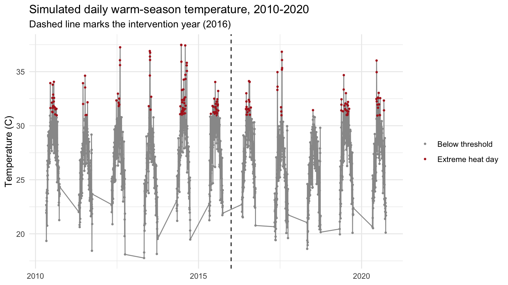
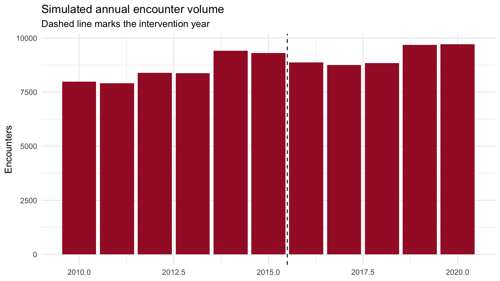
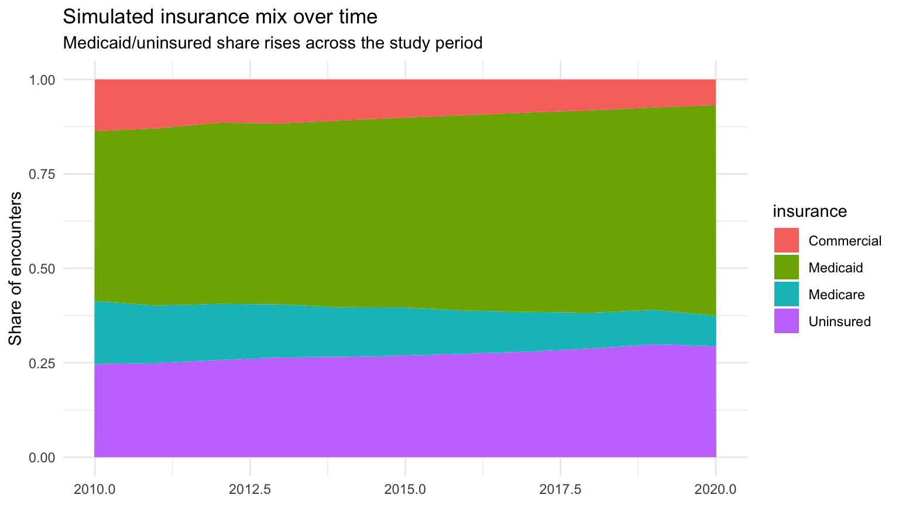

1 Building the Synthetic BEST-like Population (10 min)
We will simulate 11 warm seasons (May 1 to September 30), 2010 to 2020, with the intervention (our stand-in “HAP”) implemented at the start of 2016. That gives us a 6-year pre-period and a 5-year post-period, similar in spirit to the pre/post split used in the Boston resilience-plan paper and the Ahmedabad HAP evaluation.
1.1 A Daily Temperature Series with a Known “Extreme Heat” Threshold
We build a smooth seasonal curve, add year-to-year variability, splice in a handful of multi-day heat wave events each year, and add daily noise. None of this is calibrated to real Boston climatology; it is just meant to look like a plausible warm-season temperature series with a right skew (occasional heat waves), which is the feature that matters for the analysis below.
years <- 2010:2020
build_season_dates <- function(yr) {
seq(as.Date(paste0(yr, "-05-01")), as.Date(paste0(yr, "-09-30")), by = "day")
}
daily_df <- lapply(years, function(yr) {
dates <- build_season_dates(yr)
doy_in_season <- as.numeric(dates - min(dates)) + 1
n_days <- length(dates)
# smooth seasonal hump, peaking mid-season
seasonal_mean <- 22 + 8 * sin(pi * doy_in_season / max(doy_in_season))
# each year is a bit hotter or cooler than average, at random
year_offset <- rnorm(1, mean = 0, sd = 1.2)
# 1 to 3 heat wave events per year, each lasting 2 to 5 days, +4 to +8C
n_waves <- sample(1:3, 1)
wave_boost <- rep(0, n_days)
for (w in seq_len(n_waves)) {
wave_start <- sample(10:(n_days - 6), 1)
wave_len <- sample(2:5, 1)
wave_idx <- wave_start:(wave_start + wave_len - 1)
wave_boost[wave_idx] <- wave_boost[wave_idx] + runif(1, 4, 8)
}
temp <- seasonal_mean + year_offset + wave_boost + rnorm(n_days, 0, 1.5)
data.frame(date = dates, year = yr, month = month(dates), temp = temp)
}) %>% bind_rows()
# define "extreme heat" as the 90th percentile of the full 2010-2020 series,
# the same logic used in the PRIME-Boston papers
extreme_threshold <- quantile(daily_df$temp, 0.90)
daily_df <- daily_df %>%
mutate(
extreme = as.integer(temp >= extreme_threshold),
post = as.integer(year >= 2016)
)
cat("Extreme heat threshold (90th percentile):", round(extreme_threshold, 1), "C\n")## Extreme heat threshold (90th percentile): 30.9 Cggplot(daily_df, aes(x = date, y = temp, color = factor(extreme))) +
geom_line(color = "grey60") +
geom_point(size = 0.6) +
scale_color_manual(values = c("0" = "grey60", "1" = "firebrick"),
labels = c("Below threshold", "Extreme heat day"),
name = NULL) +
geom_vline(xintercept = as.Date("2016-01-01"), linetype = "dashed") +
labs(title = "Simulated daily warm-season temperature, 2010-2020",
subtitle = "Dashed line marks the intervention year (2016)",
x = NULL, y = "Temperature (C)") +
theme_minimal()
1.2 Simulating Individual Encounters, with a Known Ground Truth Baked In
Now we generate the person-level encounters. Four things are built into the data-generating process on purpose, because each one is what makes the three analytic methods behave differently:
- A secular upward trend in daily encounter volume, unrelated to heat, of about 2.5% per year. This is the kind of trend a naive pre/post comparison cannot distinguish from an intervention effect, and exactly the kind of confounding a DiD design is built to net out.
- A real heat effect: encounter counts rise with temperature above a 25C threshold.
- A true intervention effect: after 2016, the heat-slope is attenuated by roughly a third. This is the effect we’re hoping our analyses can recover.
- Drifting population composition: the share of patients who are Medicaid-insured or uninsured, and the share with a chronic serious mental illness diagnosis, both rise slowly over the study period. This mirrors the exact concern Hess et al. (2018) raised about Ahmedabad (demographic shifts between the pre- and post-periods) but did not have the data to address. It’s what motivates the IPW step later.
# day-level expected count: baseline * trend * heat effect * (attenuated after 2016)
daily_df <- daily_df %>%
mutate(
year_c = year - 2010,
trend_term = 0.025 * year_c,
heat_term = 0.050 * pmax(temp - 25, 0),
heat_x_post = -0.018 * post * pmax(temp - 25, 0), # TRUE effect: ~36% slope reduction
log_lambda = log(45) + trend_term + heat_term + heat_x_post,
lambda = exp(log_lambda),
n_encounters = rpois(n(), lambda)
)
# expand each day into individual encounter-level rows
make_day_encounters <- function(row) {
n <- row$n_encounters
if (n == 0) return(NULL)
yr <- row$year
# population composition drifts over the study period
p_medicaid_uninsured <- 0.70 + 0.015 * (yr - 2010) # rising, capped below
p_medicaid_uninsured <- min(p_medicaid_uninsured, 0.92)
insurance_probs <- c(
Medicaid = p_medicaid_uninsured * 0.65,
Uninsured = p_medicaid_uninsured * 0.35,
Medicare = (1 - p_medicaid_uninsured) * 0.55,
Commercial = (1 - p_medicaid_uninsured) * 0.45
)
p_chronic_mi <- min(0.28 + 0.006 * (yr - 2010), 0.45) # rising chronic illness share
svi_mean <- min(0.45 + 0.01 * (yr - 2010), 0.70) # rising social vulnerability
data.frame(
date = rep(row$date, n),
year = yr,
month = row$month,
temp = row$temp + rnorm(n, 0, 0.5), # small within-city spatial noise
extreme = row$extreme,
post = row$post,
age = pmin(pmax(round(rnorm(n, 38, 13)), 18), 90),
sex = sample(c("Male", "Female"), n, replace = TRUE, prob = c(0.53, 0.47)),
insurance = sample(names(insurance_probs), n, replace = TRUE, prob = insurance_probs),
chronic_mi = rbinom(n, 1, p_chronic_mi),
svi = pmin(pmax(rnorm(n, svi_mean, 0.12), 0), 1)
)
}
encounter_list <- lapply(seq_len(nrow(daily_df)), function(i) make_day_encounters(daily_df[i, ]))
encounters <- bind_rows(encounter_list)
encounters$id <- seq_len(nrow(encounters))
cat("Total simulated encounters:", nrow(encounters), "\n")## Total simulated encounters: 97224## Average per warm season: 8839cat("(Compare to the real BEST scale reported in the Boston DiD papers:",
"roughly 6,500-8,200 encounters per warm season)\n")## (Compare to the real BEST scale reported in the Boston DiD papers: roughly 6,500-8,200 encounters per warm season)1.3 Sanity Checks
Always look at your simulated data before you trust an analysis built on top of it.
# annual encounter volume: should show the ~2.5%/year upward trend
encounters %>%
count(year) %>%
ggplot(aes(x = year, y = n)) +
geom_col(fill = "#A51C30") +
geom_vline(xintercept = 2015.5, linetype = "dashed") +
labs(title = "Simulated annual encounter volume",
subtitle = "Dashed line marks the intervention year",
x = NULL, y = "Encounters") +
theme_minimal()
# insurance mix drifting over time, exactly the compositional shift
# Hess et al. flagged as an unmeasured concern for Ahmedabad
encounters %>%
count(year, insurance) %>%
group_by(year) %>%
mutate(pct = n / sum(n)) %>%
ggplot(aes(x = year, y = pct, fill = insurance)) +
geom_area() +
labs(title = "Simulated insurance mix over time",
subtitle = "Medicaid/uninsured share rises across the study period",
x = NULL, y = "Share of encounters") +
theme_minimal()